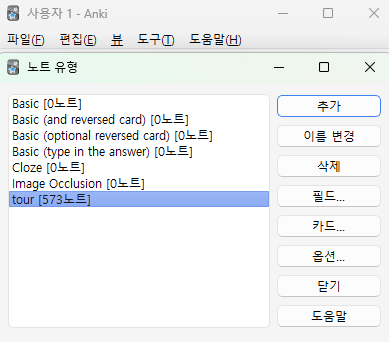
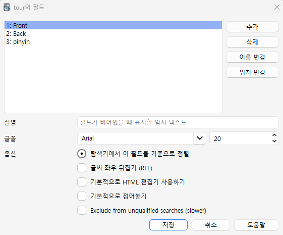

Anki 준비
Anki를 설치하고, 단어 정보를 담을 필드를 만들어 둡니다. 필드는 뜻 · 단어 · 발음 · 예문처럼 카드에 들어갈 정보를 하나씩 담는 칸이에요.
추천 필드: 의미 단어 발음 예문 예문해석
한국어 뜻을 보고 외국어 단어를 떠올리는 연습을 하려면 1번째 필드를 한국어 뜻으로 두세요. 1번째 필드가 카드 앞면(문제)이 됩니다.
-
1
PC에 Anki 설치하고 동기화 켜기
apps.ankiweb.net에서 무료로 받을 수 있어요. 무료 AnkiWeb 계정으로 로그인하고 [동기화]를 누르면 폰 앱(AnkiDroid 무료 · AnkiMobile 유료)과 카드가 자동으로 맞춰집니다.
-
2
[도구] ➔ [노트 유형 관리] 열기
노트 유형은 "어떤 필드가 있고 카드가 어떻게 보일지"를 묶어 둔 카드 양식이에요. 단축키 Ctrl + Shift + N (Mac: Cmd + Shift + N)
-
3
[추가]로 새 노트 유형 만들기
"기본"을 복제하고
다국어 단어장처럼 알아보기 쉬운 이름을 붙이세요. -
4
[필드...]에서 필드 만들고 순서 맞추기
원래 있던 필드 2개는 [이름 변경]로
의미·단어로 바꾸고, [추가]로발음·예문·예문해석을 더합니다. 순서는 [위치 변경]으로 맞춰요.


자세히 보기 — 노트와 카드의 차이, 필드별 설명
💡 노트와 카드는 뭐가 달라요?
Anki에서는 카드를 한 장씩 직접 그리지 않아요. 단어 하나의 정보(노트)를 필드별로 입력하면, 정해 둔 카드 서식에 맞춰 카드가 자동으로 만들어집니다. 그래서 단어 · 뜻 · 발음 · 예문을 각각 다른 필드에 나눠 넣어야 카드를 깔끔하게 꾸밀 수 있어요.
📋 추천 필드 구성
| 순서 | 필드 이름 | 들어갈 내용 (예시) | 카드에서 보이는 곳 |
|---|---|---|---|
| 1번째 | 의미 (Meaning) | 한국어 뜻 (예: [명사] 사과) | 카드 앞면 (문제) |
| 2번째 | 단어 (Word) | 외울 외국어 단어 (예: apple, リンゴ, 苹果) | 카드 뒷면 (정답) |
| 3번째 | 발음 (Pronunciation) | 발음기호, 일본어 후리가나, 중국어 병음 등 (예: píngguǒ) | 카드 뒷면 (또는 앞면) |
| 4번째 | 예문 (Sentence) | 외국어로 된 예문 (예: I ate a fresh apple.) | 카드 뒷면 |
| 5번째 | 예문해석 (Translation) | 예문의 한국어 번역 (예: 나는 신선한 사과를 먹었다.) | 카드 뒷면 |
| 6번째 (선택) | 추가정보 (Extra) | 품사, 비슷한 말, 반대말, 외우는 요령 등 | 카드 뒷면 |
필드 순서와 단어장 파일의 칸 순서는 꼭 같아야 해요
나중에 가져올 CSV 파일의 칸 순서가 필드 순서와 다르면, 발음 자리에 예문이 들어가는 식으로 내용이 뒤섞입니다.
나중에 가져올 CSV 파일의 칸 순서가 필드 순서와 다르면, 발음 자리에 예문이 들어가는 식으로 내용이 뒤섞입니다.